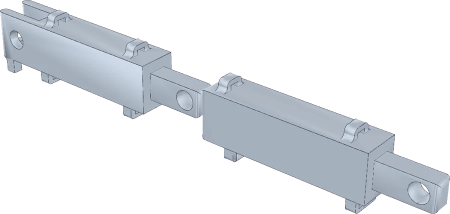
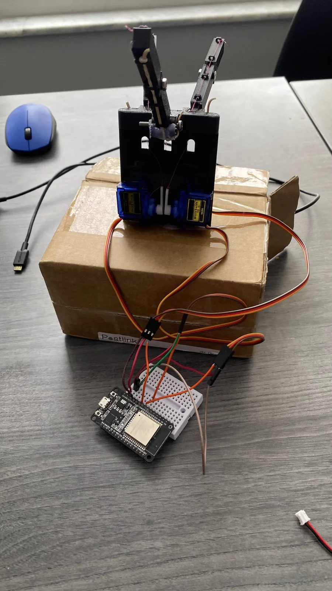
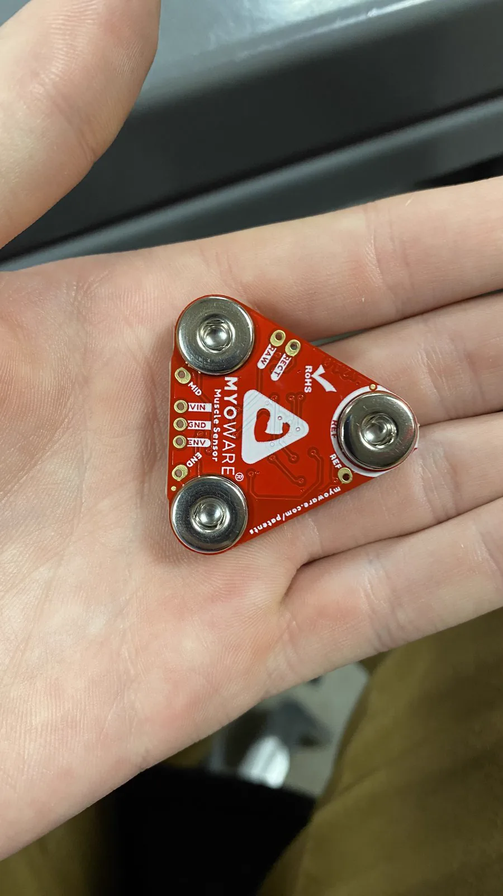

EMG Robotic Hand
A robotic hand that opens and closes on a forearm muscle signal. I built it over one weekend with an electrical engineering teammate, and we demonstrated it live to the judges.
- 2 daysfrom start to demo
- 4th of 12teams
The build
I met my teammate at the kickoff and we decided to build together on the spot. I did the finger design and the firmware. My teammate built the sensing hardware and modeled the palm in a different CAD package, which I brought into my SolidWorks assembly through a neutral file format.
A storm cut the second day short, so what worked when the venue closed was what we demonstrated. We placed 4th of 12.
Fingers
Each finger is three hinged links with a cable running through them. A servo per finger pulls its cable, which works like a tendon, to close the finger. When the tension comes off, an elastic element pulls the finger straight again, and stops on the hinges limit the travel.
This was the first assembly I built where the parts were meant to move after they went together. Each knuckle uses a hinge mate, which leaves the joint free to rotate about one axis, and getting the fingers to curl like a real hand meant learning how mates remove degrees of freedom one at a time.




From muscle signal to motion
A contracting muscle produces a small electrical signal as its fibers fire. A MyoWare sensor picks it up through electrodes on the forearm and outputs an envelope voltage that rises the harder you flex. The ESP32 firmware compares that voltage against a threshold. Above it the hand closes, and below it the hand opens. The command goes over ESP-NOW to a second ESP32 driving the servos, reusing the link from my ESP32 quadcopter.
We only had bare snap connectors, not the adhesive gel electrodes the sensor is meant for, so the sensor had to be pressed against the skin and the signal changed with placement. I set the threshold by hand against a live trace, then flexed over and over to make sure the hand responded every time.


Next
Add force sensing to the fingertips and feed it back into the grip. Right now the hand closes with no sense of how hard it is squeezing, so it can't tell barely touching something from crushing it.